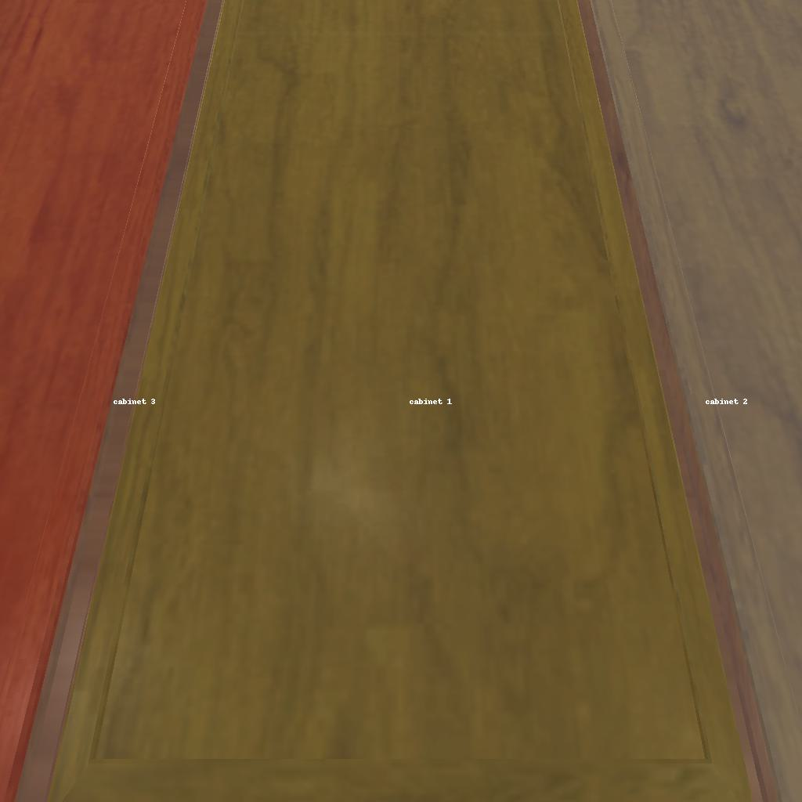
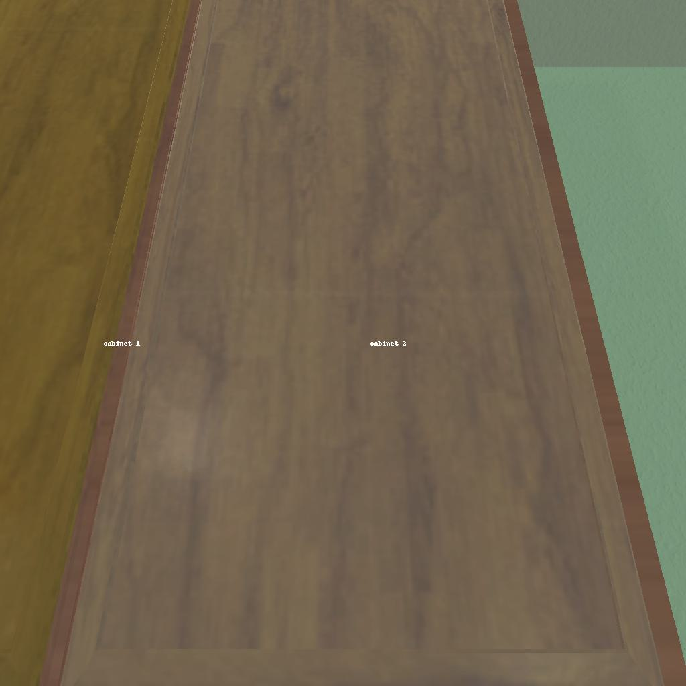

---------------------------------------------------------task: 17---------------------------------------------------------
--------------------------------------------------------------------------------------------------------------------------------------------------------------------
--------------------------------------------------------------------------------------------------------------------------------------------------------------------
Step:--------------------------------------------------------------------------7-------------------------------------------------------------------------------
----------------------------------------
VLM Prompt:
Image1:
Image2:
Image3:
**Instruction**
1. Analyze the provided image to identify all visible household objects, focusing on those relevant to the task description "cool some pan and put it in stoveburner."
2. Use the analysis of the image and the task hint "The agent must find an object of the desired type, pick it up, go to a fridge, cool the object with the fridge, then find the correct location to place it, and put it down there. The agent does not need to use the fridge button or open the fridge to cool the object, and the agent just needs to do action that is "cool the object with the fridge"." to answer the question: what is the most reasonable action in the choices for the task description "cool some pan and put it in stoveburner"?
4. Decide and write the answer using the template: The answer is: (i): , where i is the real number. If there is no desired object in the image, search every place based on **Initial Observation** to find the object. And if no one is exactly correct, choose a similar answer.
**Initial Observation**
You are in the middle of a room. Looking quickly around you, you can see cabinet (1-14), countertop (1-2), microwave (1), drawer (1-5), sink (1), sinkbasin (1), coffeemachine (1), stoveburner (1-4), toaster (1), fridge (1), diningtable (1), garbagecan (1), safe (1)
**Answer Choices**
(1): go to cabinet 3
(2): go to countertop 1
(3): go to cabinet 4
(4): go to cabinet 5
(5): go to microwave 1
(6): go to cabinet 6
(7): go to drawer 1
(8): go to drawer 2
(9): go to drawer 3
(10): go to cabinet 7
(11): go to cabinet 8
(12): go to sink 1
(13): go to sinkbasin 1
(14): go to coffeemachine 1
(15): go to cabinet 9
(16): go to cabinet 10
(17): go to drawer 4
(18): go to cabinet 11
(19): go to stoveburner 1
(20): go to stoveburner 2
(21): go to stoveburner 3
(22): go to stoveburner 4
(23): go to cabinet 12
(24): go to toaster 1
(25): go to drawer 5
(26): go to countertop 2
(27): go to fridge 1
(28): go to cabinet 13
(29): go to cabinet 14
(30): go to diningtable 1
(31): go to garbagecan 1
(32): go to safe 1
(33): open cabinet 2
(34): close cabinet 2
(35): examine cabinet 2
**Answer**
Let's think step by step by following the instructions.
----------------------------------------
----------------------------------------
Original Response:
The task is to "cool some pan and put it in stoveburner." The first step is to find a pan. We can't see a pan in the provided images, so we need to search every place based on the Initial Observation to find one. Cabinets and drawers are common places where pans are usually kept in a kitchen.
(1): go to cabinet 3 - This action could lead to finding a pan, but it's not the only cabinet available.
(2): go to countertop 1 - Pans are not usually stored on countertops.
(3): go to cabinet 4 - Another possible location for a pan.
(4): go to cabinet 5 - Another possible location for a pan.
(5): go to microwave 1 - Pans are not stored in microwaves.
(6): go to cabinet 6 - Another possible location for a pan.
(7): go to drawer 1 - Pans could be stored in drawers, so this is a possible action.
(8): go to drawer 2 - Another possible drawer where a pan might be stored.
(9): go to drawer 3 - Another possible drawer for storing pans.
... and so on with other cabinets and drawers.
After finding a pan, the agent must "cool the object with the fridge." Therefore, the agent will need to:
(27): go to fridge 1 - This is the step to cool the pan.
Finally, the agent needs to "put it in stoveburner."
(19): go to stoveburner 1 - This is a possible action to complete the task.
(20): go to stoveburner 2 - Another possible action to complete the task.
(21): go to stoveburner 3 - Another possible action to complete the task.
(22): go to stoveburner 4 - Another possible action to complete the task.
The most reasonable actions would be to find a pan, cool it with the fridge, and then put it on a stoveburner. Since we don't know in which cabinet or drawer the pan is, we'll have to choose a potential location to search. Since the fridge action is given and is a required step, we'll include it in the answer.
The most reasonable actions based on the images and initial observation would be:
- Find a pan by searching in the cabinets or drawers.
- Cool the pan using the fridge.
- Place the cooled pan on a stoveburner.
Since we cannot choose multiple actions and must select the most reasonable single action, we will choose the action that involves cooling the pan, as it's a specific and necessary step in the task:
The answer is: (27): go to fridge 1.
----------------------------------------
----------------------------------------
>>> Refine Original VLM Response and Get Pure Action: go to fridge 1
----------------------------------------
-----------------------------------------------------------------
Running time: 24.01348090171814 seconds
Total Money: 10.655
-----------------------------------------------------------------
-----------------------------------------------------------------
Text Observation:You arrive at loc 28. The fridge 1 is closed.
-----------------------------------------------------------------
UNSUCCEED